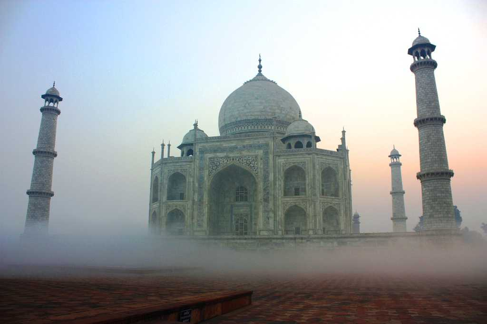
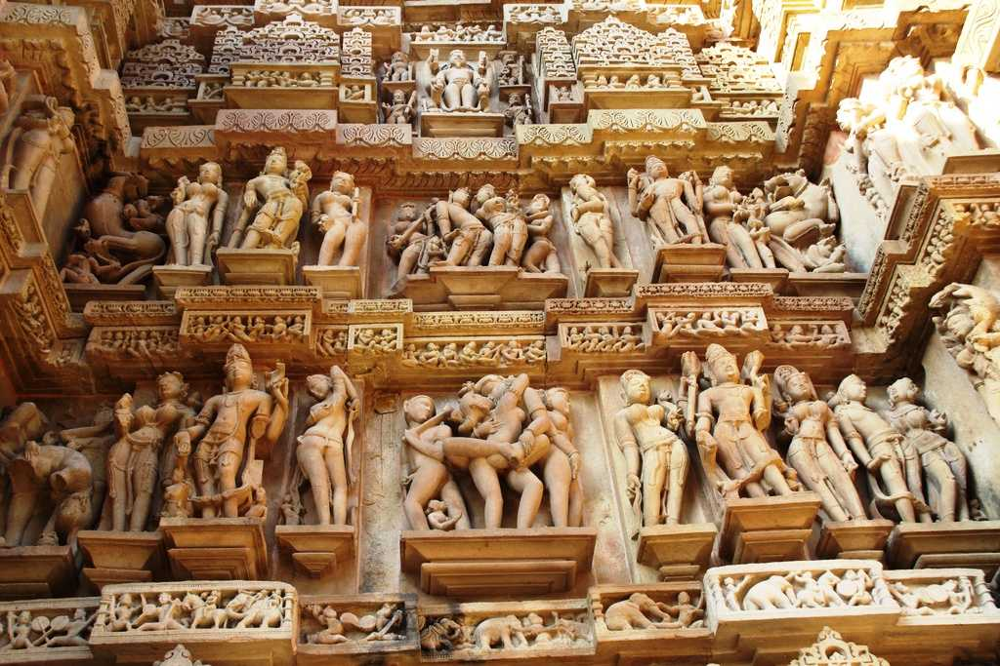
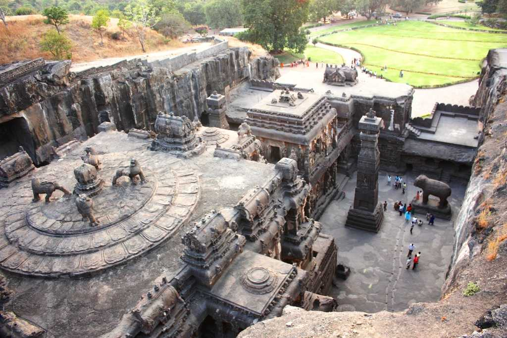

| Home | History | Place To Visit | |
Art & Culture | National Campaign | Contact Us |
 One of Seven Wonders of the World, White Marble Mughal Architecture, the Taj Mahal was build by emperor Shah Jahan in the memory of his wife Mumtaj Mahal. It is located at the bank of river Jamuna in Agra. It was completed in 1653 with then estimated cost of 32 million Indian rupees which would today stand upto 58 billion Indian rupees. It is considered as the best example of Mughal architecture worldwide and is called the “Jewel of Muslim Art in India”. This is probably the monument that is most recognised the world over for its association with the heritage of India.
 Located in Madhya Pradesh, Khajuraho is an important UNESCO World Heritage site in India. Khajuraho is unique heritage site which is famous for a group of Hindu and Jain Temples situated 175 km south-east of Jhansi. They are well known for their Nagara style symbolism and erotic figures and sculptures. These sensuous stone carvings of human and animal form in erotic poses are very aesthetically portrayed and stand testimony to the rich cultural heritage of India. Most of these monuments were built between 950 to 1050 CE under the reign of the Chandella dynasty. It consists of total 85 Temples spread across an area of 20 square kilometres. The Kandariya temple is the most prominent of all of these temples in the Khajuraho complex.
 Hampi is a UNESCO World Heritage site located in the Northern part of Karnataka. It lies within the ruins of the ancient, prosperous kingdom of Vijayanagar. The ruins at Hampi are a collection of heritage sites depicting the fine Dravidian style of art and Architecture. The most important heritage monument in this site is the Virupaksha Temple, which continues to be a very important religious centre for the Hindus. There are several other monuments which are a part of this heritage site, Together, they’re collectively known as the ‘Group of Monuments at Hampi’. Some of the other known ones include the Krishna temple complex, Narasimha, Ganesa, Hemakuta group of temples, Achyutaraya temple complex, Vitthala temple complex, Pattabhirama temple complex, Lotus Mahal complex, several puras or bazaars surrounding the temple complex, and also living quarters and residential areas.
Hampi is a UNESCO World Heritage site located in the Northern part of Karnataka. It lies within the ruins of the ancient, prosperous kingdom of Vijayanagar. The ruins at Hampi are a collection of heritage sites depicting the fine Dravidian style of art and Architecture. The most important heritage monument in this site is the Virupaksha Temple, which continues to be a very important religious centre for the Hindus. There are several other monuments which are a part of this heritage site, Together, they’re collectively known as the ‘Group of Monuments at Hampi’. Some of the other known ones include the Krishna temple complex, Narasimha, Ganesa, Hemakuta group of temples, Achyutaraya temple complex, Vitthala temple complex, Pattabhirama temple complex, Lotus Mahal complex, several puras or bazaars surrounding the temple complex, and also living quarters and residential areas.
 The Ellora Caves are an important UNESCO World Heritage site and an archaeological site, ranging 29 kilometers Northwest of the city of Aurangabad. The Ellora Caves are well known for their Indian-rock cut architecture. There are about 34 rock cut temples and caves which can be dated to about 600 to 1000 AD, are important in terms of understanding the lives of the people living in these times. The presence of Hindu, Buddhist and Jain temples and sculptures portray the tolerance which was extended towards different faiths and beliefs in Ancient Indian History. Excavated site consists of Charanandri Hills, Buddhist Hindu and Jain rock-cut temples, Viharas and Maths of 5th and 10th century.
 Not very far from the popular beach town of Puri, the Sun Temple at Konark is a 13th century temple situated in Konark, Odissha. It was built by king Narasimhadeva I of the Eastern Ganga Dynasty in around AD 1250. The Sun temple is in the shape of a gigantic chariot with carved stone wheel, pillars and walls and is led by 6 enormously carved horses. It’s also considered to be one of the largest brahmin sanctuaries in India. The temple is originally said to be built at the mouth of river Chandrabhaga but the waterline receded since then. This World Heritage Site in India reflects the grandeur of the traditional style of Kalinga Architecture which was prevalent then.
Not very far from the popular beach town of Puri, the Sun Temple at Konark is a 13th century temple situated in Konark, Odissha. It was built by king Narasimhadeva I of the Eastern Ganga Dynasty in around AD 1250. The Sun temple is in the shape of a gigantic chariot with carved stone wheel, pillars and walls and is led by 6 enormously carved horses. It’s also considered to be one of the largest brahmin sanctuaries in India. The temple is originally said to be built at the mouth of river Chandrabhaga but the waterline receded since then. This World Heritage Site in India reflects the grandeur of the traditional style of Kalinga Architecture which was prevalent then.
| Thank You! |